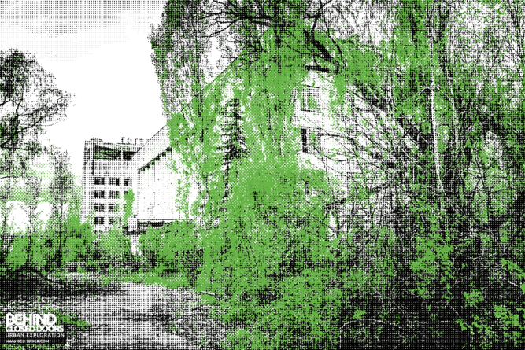

MEMENTOS FROM BEAUTIFUL RUINS
Despite the immense damage caused by human impact, nature’s resilience still shines through, revealing a persistent beauty even in the face of destruction. Wildlife is under unprecedented threat from human activity, but research suggests that given space and time, even animal and plant species on the brink of extinction can bounce back. A 2022 report commissioned by the non-profit Rewilding Europe found that many European bird and mammal species were making a comeback, “highlighting the propensity for wildlife to rebound and recolonize when given the opportunity.”
Sometimes, that opportunity can be as simple as humans leaving a place to be reclaimed by nature. All over the world, from temple ruins overrun with tree roots to former war zones bustling with new ecosystems, there are striking examples of nature proves that once humans move out, wildlife has the chance to move in.
GOVERNOR'S ISLAND, NEW YORK, UNITED STATES
Located in New York Harbor between the boroughs of Manhattan and Brooklyn, Governors Island had a military presence from the late 1700s until 1996, serving the U.S. Army and the Coast Guard. After functioning as a military base for over 200 years, the 172-acre Governors Island in New York City remained unoccupied for almost a decade before reopening to visitors in 2005.
Despite the island’s redevelopment and the creation of a beautiful public park, much of the original military infrastructure remains untouched. These abandoned buildings have become overgrown, slowly overtaken by nature, with vines creeping up their walls and trees rooting in once-bustling courtyards. Governors Island now represents a fascinating juxtaposition of reclaimed natural spaces alongside a year-round, car-free destination for New Yorkers and visitors from around the world.
STACK ROCK FORT, WALES

Located off the Pembrokeshire coast in west Wales, stands a time capsule in the form of a long-abandoned island fort.
Built in the 1850s to protect against an invasion by sea, Stack Rock Fort originally housed several guns, troops and officers, but its use waned over the years. During World War I it was manned by a small number of soldiers and was eventually disarmed in 1929.
Since untouched for almost 100 years, the fort has been slowly reclaimed by flora and fauna.
The new custodian of the fort, Nicholas Mueller, director of community interest company Anoniiem, which has bought the fort and plans to maintain it as a “living ruin,” told CNN that hazel plants grow there, and seabirds are also common, including at least three types of gulls with populations between 300 and 500 on the fort at any one time.
Mueller said regular visitors to the fort include a couple of grey seals. Large black cormorants have set up a colony on the fort and can often be spotted perched with their wings held out.
HOUTOUWAN, SHENGSHAN ISLAND, CHINA

It once housed a population of over 3,000 residents, but its remote location, over five hours travel to the mainland, made it hard to access education, jobs and food. People started moving out in the 1990s and by 2002, the village was completely abandoned.
Once a bustling fishing village, Houtouwan on Shengshan Island, part of the Zhoushan Archipelago, now looks like a post-apocalyptic ghost town.
It once housed a population of over 3,000 residents, but its remote location, over five hours travel to the mainland, made it hard to access education, jobs and food. People started moving out in the 1990s and by 2002, the village was completely abandoned.
Decades of disuse have allowed nature to reclaim the land, with lush green climbing plants blanketing everything that was left behind.
CHERNOBYL, PRIPYAT, UKRAINE
Located in northern Ukraine, near the Belarusian border, Chernobyl was the site of the world’s worst nuclear disaster in 1986 when Reactor No. 4 at the Chernobyl Nuclear Power Plant exploded. The nearby town of Pripyat, once home to nearly 50,000 people, was evacuated in just 36 hours, leaving behind a ghost city frozen in time.
Since the disaster, the Chernobyl Exclusion Zone, spanning a 19-mile (30-kilometer) radius around the plant, has remained largely uninhabited. While radiation levels still make the area dangerous for long-term human habitation, nature has slowly reclaimed much of the abandoned landscape. Buildings that were once bustling with workers and residents have been overgrown by trees and vines, with wildlife thriving in the absence of human activity.
Despite sporadic visits from researchers and tourists, much of the infrastructure, including schools, amusement parks, and apartment blocks, has been left untouched, succumbing to both the elements and the steady advance of nature. The exclusion zone has become an unintended wildlife refuge, with species such as wolves, lynxes, and wild boars repopulating the area, creating a stark contrast between the devastation of human history and the resilience of the natural world.
“When humans move out, nature moves in—transforming abandoned spaces into thriving ecosystems where wildlife flourishes among the remnants of civilization.”
FUKUSHIMA, JAPAN
The Great East Japan Earthquake and consequent tsunami in 2011 triggered the world’s second worst nuclear disaster, at the Fukushima power plant in northern Japan.
In the days following, the Japanese government created the 12.5-mile (20-kilometer) Fukushima Exclusion Zone, and more than 150,000 residents were forced to evacuate their homes. Since then, evacuation orders have steadily been lifted, and people encouraged to move back to some towns and villages. But some areas remain off-limits for people to live.
While you might imagine nuclear disaster zones to be wastelands devoid of life, research suggests otherwise. James Beasley, professor of forestry and natural resources at the University of Georgia in the US, said in a 2016 TED talk that there was an “incredible diversity of animals” in the exclusion zone, adding that the population of wild boar was so large that it had “become necessary to control their populations in parts of the exclusion zone.”
Other animals that have flourished in the area include Japanese macaques, common raccoon dogs, Japanese serow and red foxes.